한글 560년 국어 교과서 100년
김운기 국어 교과서 소장품展
2006_1009 ▶ 2006_1014
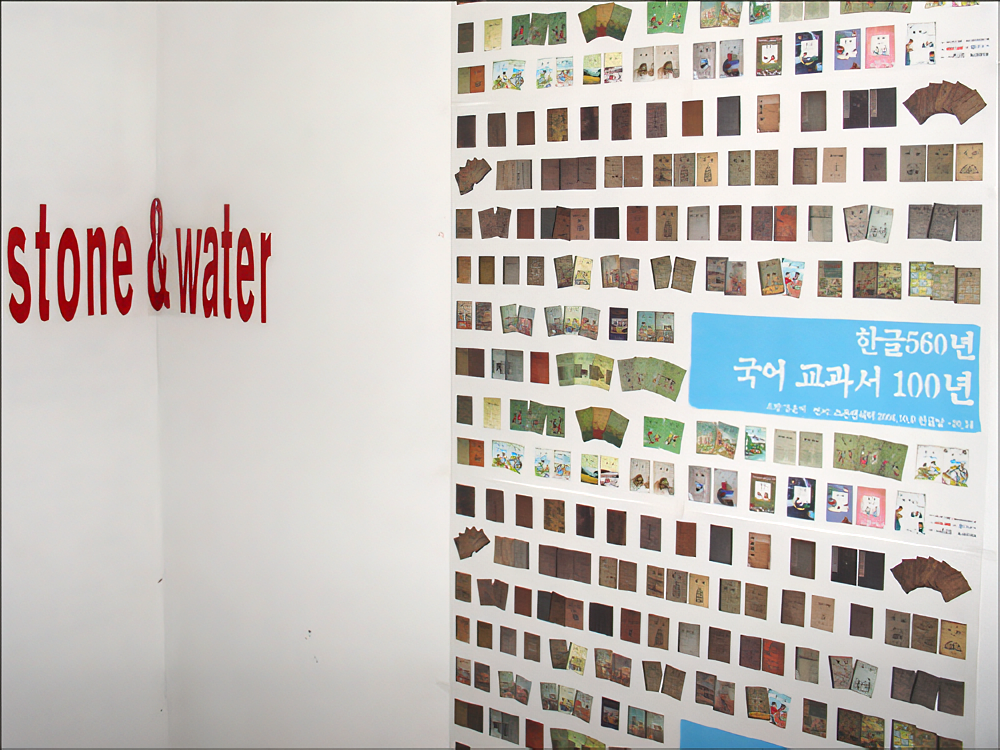
보충대리공간 스톤앤워터
경기도 안양시 만안구 석수2동 286-15번지
Tel. 031_472_2886
www.stonenwater.org
“보아라저동자는말을끄을고가면서글을닑는도다. 뎌동자의일흠은복동이오 나혼겨우12세니라.”
이글은 1906년 발행되어 1909년 11월 20일 절명한 <보통학교 학도용 국어독본> 제2권 제1과에 나오는 구절로 우리는 이 책을 근대 최초의 국어교과서이자, 대한제국 마지막 국어교과서로 부르고 있다. 당시 교과서 속에는 순만이와 순만이의 친구 복동이가 등장한다.
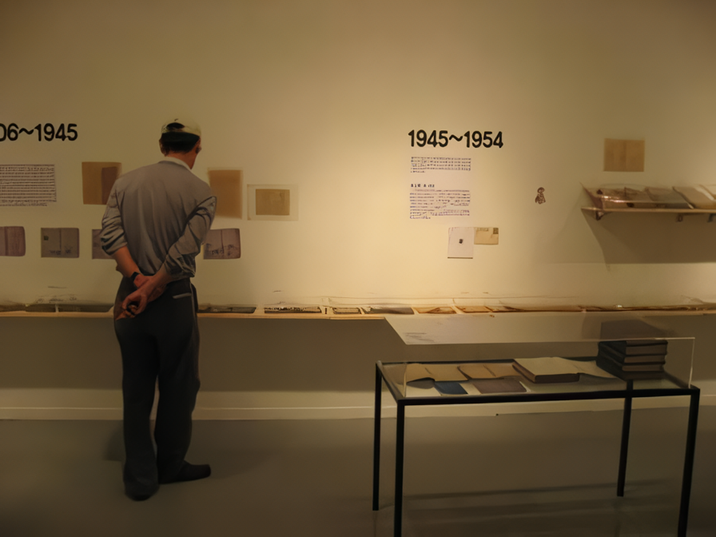 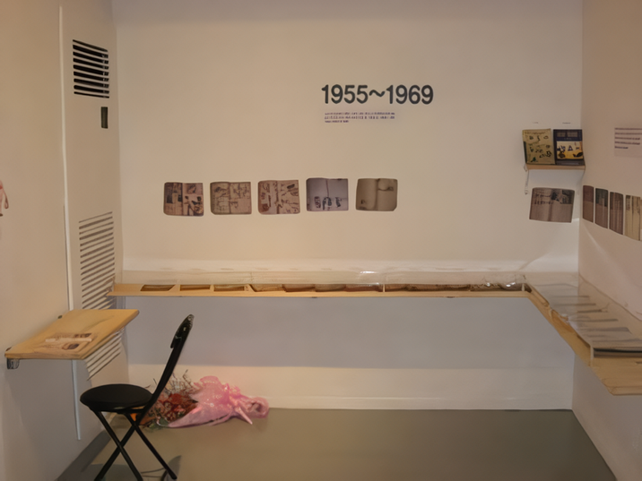 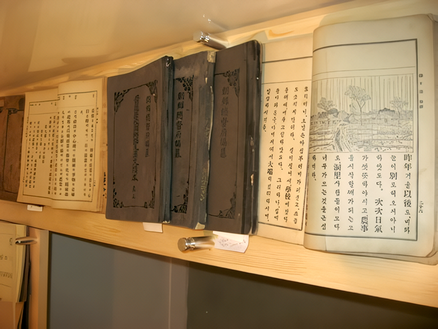
1910년 일제강점기가 시작되면서 국어가 일본어로 바뀌고 말지만 1945년 해방을 맞아 그해 12월 조선어학회가 발간한 <한글첫걸음>과 미 군정청 학무국이 발행한 <초등국어독본> (상·하)에는 창근이와 일남이, 영길이 순이와 준선이 어린이가 새롭게 등장한다.
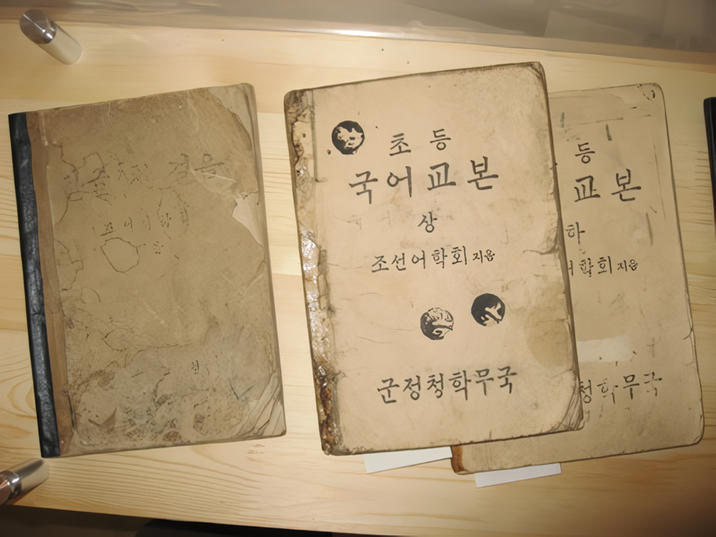 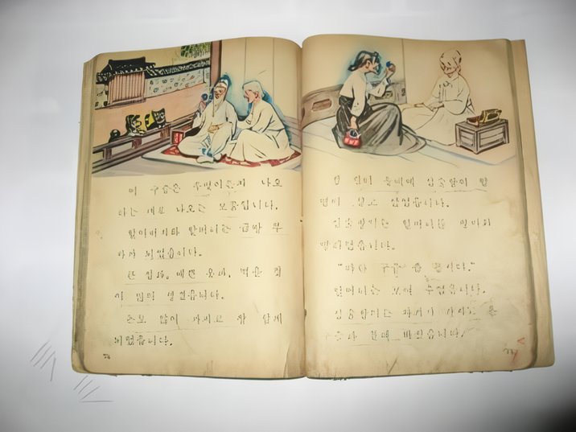 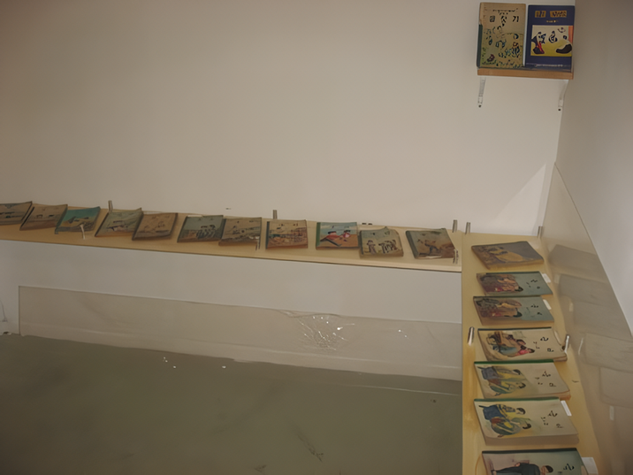 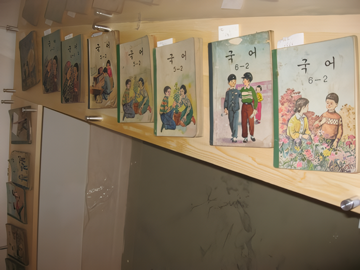
1948년 문교부가 발행한 <철수와 바둑이(국어1-1)>에선 "이리와, 이리와, 바둑아, 이리와", "집으로 가아. 바둑아, 집으로 가아. 영이한테 가아"로 시작하는 대목을 통해 씩씩한 철수와 영희가 등장한다. '철수와 영이, 바둑이, 복남이, 영수'가 등장하는 이 교과서는 지난 2월 '교과서의 날 제정추진위원회'가 정부수립 후 문교부가 최초로 발행해 학교에 공급한 책이라는 점에서 <초등국어 1-1> 탄생일인 10월 5일을 '교과서의 날'로 정하는 계기가 되기도 했다.
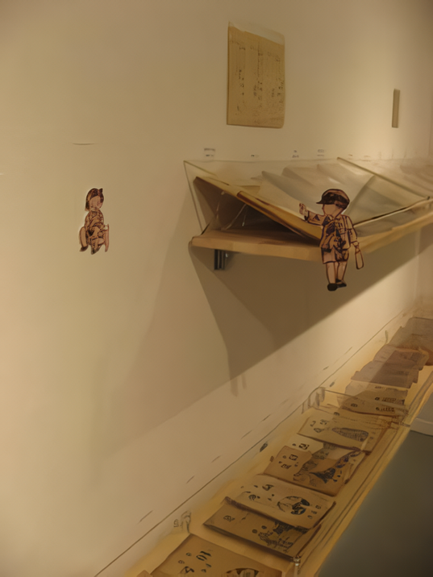 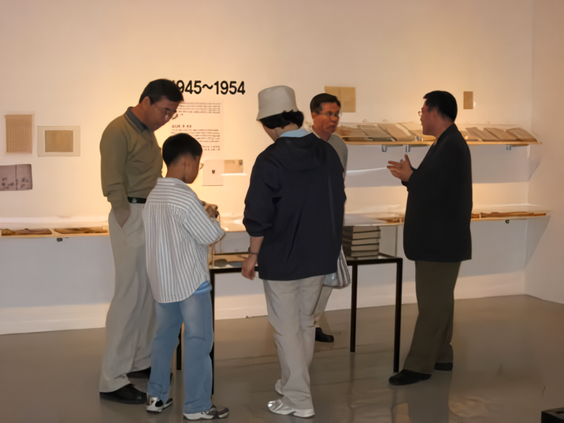 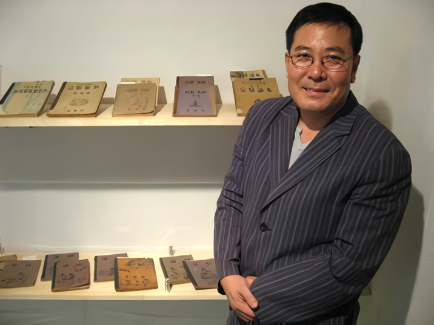
작정하고 시작한 건 아니고 우연히 헌책방에 들렀는데, 오래된 국어교과서들의 무게를 달아 폐지로 파는 것을 보고 안타까운 마음이 들어서 모으기 시작해 재미가 생겨서 빠짐없이 챙기게 됐지요. 사실 학교 졸업하고 나면 교과서를 누가 쳐다보기나 합니까. 어릴 때부터 인간의 정신이나 문화에 관심이 많았습니다. 시를 쓰거나 검도를 배우게 된 것이나 건축일을 하게 된 것도 그 때문입니다. 안양은 저에게 정신적·문화적인 일들을 이룰 수 있는 곳이라고 생각해 전시회도 한글날을 택해 안양에서 갖게 되었습니다.
■ 김운기